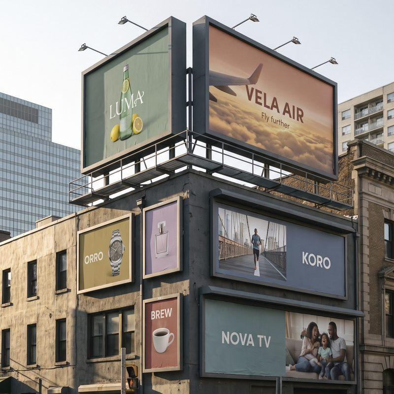
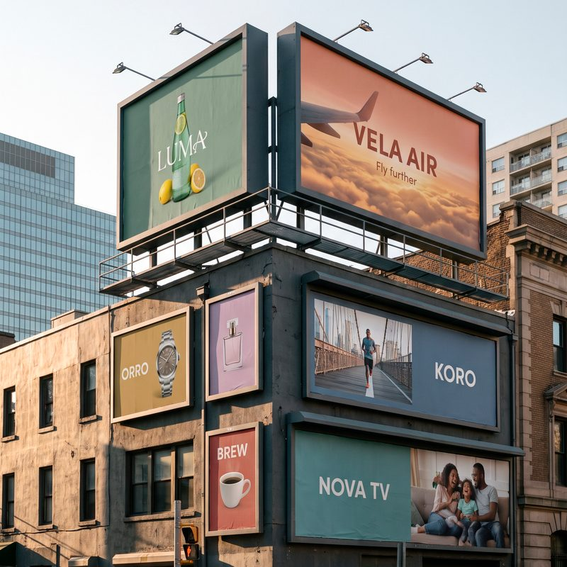

Photoshop Interior · Lezione 02 · Esperimenti
Laboratorio del colore.
Prima di scontornare la sedia apriamo un file, e il file ha un colore che va letto bene. Qui proviamo con le mani che cosa sono luce, inchiostro e profilo, e perché prima di consegnare un'immagine quasi sempre la convertiamo.
01 / Luce e inchiostro
Uno parte dal buio, l'altro dal bianco.
Lo schermo accende la luce: rosso, verde e blu si sommano e schiariscono. La stampa mette inchiostro sulla carta: ciano, magenta, giallo e nero si sovrappongono e tolgono luce.
Tre faretti su una parete buia
Inchiostri su un campione di carta
Porta tutto a 0 e poi tutto a 100: la luce va dal nero al bianco, gli inchiostri dalla carta bianca a un colore molto scuro. Gli inchiostri qui imitano quelli veri da tipografia, ma restano uno schema: in stampa contano anche carta e macchina.
02 / Il campione del cliente
Rifai il colore. Poi rifallo in stampa.
Il cliente ti manda il campione di un materiale. Riproducilo con i cursori, prima con la luce e poi con gli inchiostri. Il numero grande dice quanto sei lontano: sotto 2 i due colori sono uguali a occhio.
Gara in aulaTutti sullo stesso campione, ognuno dal suo telefono o PC. Premete «Via!» insieme: avete 2 minuti. Quando pensate di esserci premete «Fatto». Vince chi scende sotto 2 nel tempo più breve; se nessuno ci arriva, chi è più vicino. Poi alzate i telefoni. Con l'insegna LED in CMYK nessuno arriverà sotto 2: è il momento di chiedersi perché.
Distanza tra i due colori (ΔE). Più è bassa, più si somigliano.
Cosa ci portiamo a casa. Lo schermo arriva a colori che gli inchiostri non raggiungono: si dice che sono fuori gamma. Per questo una stampa si prepara con chi stampa, e un colore acceso visto a schermo va controllato prima di prometterlo al cliente.
03 / Profili colore
Converti, quasi sempre.
In un file i colori sono numeri. Il profilo dice come vanno letti: gli stessi numeri, letti in sRGB, Adobe RGB o ProPhoto RGB, diventano tre colori diversi.
sRGB
Il profilo comune di schermi, siti e telefoni.
Adobe RGB
Più colori, soprattutto verdi e azzurri. Usato in fotografia e stampa.
ProPhoto RGB
Ancora più ampio. Si usa per lavorare le foto RAW.
Questo browser non riesce a mostrare i tre profili: i campioni qui sopra sembrano uguali, ma non lo sono.
Converti
Quasi tutti i file arrivano già con un profilo: le foto, i render, le immagini dei produttori. Photoshop sa come leggerli. Quando li portiamo nel nostro spazio di lavoro (io lavoro sempre in Adobe RGB), o ne prepariamo una copia per il web, un cliente o una tipografia, convertiamo: Photoshop ricalcola i numeri perché il colore resti lo stesso.
Assegna
Serve solo quando un file arriva senza profilo, o con quello sbagliato, e sappiamo da dove viene. Assegnare non ricalcola niente: dice a Photoshop come leggere i numeri, quindi l'aspetto cambia. Se lo usi al posto di Converti, rovini i colori.
Photoshop te lo chiede quando apri il file
In Modifica → Impostazioni colore si sceglie lo spazio di lavoro RGB (io uso Adobe RGB) e si chiede a Photoshop di avvisarci all'apertura quando un file ha un profilo diverso o non ne ha. Da quel momento, ogni volta, ti chiede cosa fare.
- Spazio di lavoro RGB: Adobe RGB (1998), lo stesso per tutte le immagini di un progetto. Ogni file che arriva in un altro profilo si converte qui.
- Profili diversi o mancanti: spunta le caselle che fanno chiedere all'apertura.
- Apri il file: se il profilo è diverso compare la finestra qui sotto. Prova le tre scelte.
Il documento «manifesti-srgb.jpg» ha un profilo che non corrisponde allo spazio di lavoro RGB.
- Incorporato
- sRGB IEC61966-2.1
- Spazio di lavoro
- Adobe RGB (1998)
Il nome della finestra e delle tre voci può cambiare un poco tra una versione di Photoshop e l'altra; il senso è questo. Per approfondire: assegnare e convertire un profilo (Adobe).
04 / La foto spenta
Che cosa è successo a questa foto?
Hai consegnato un'immagine e il cliente scrive: «sul sito è venuta spenta». Ecco tre versioni dello stesso file. Per ognuna decidete che cosa è successo, poi scegliete quella da consegnare.
A coppieCinque minuti per decidere insieme, senza aprire Photoshop. Poi «Controlla» e discussione con la classe: chi ha scelto quale, e perché.

A
COra rifatelo in Photoshop
- Impostazioni colore. Spazio di lavoro RGB Adobe RGB e avviso all'apertura per i profili diversi o mancanti, come nella parte 03.
- Aprite la foto qui sotto. È in sRGB: Photoshop vi chiede cosa fare e voi scegliete Converti nello spazio di lavoro. Ora è in Adobe RGB, come tutti i file di lavoro.
- Esportate due JPEG con File → Esporta → Esporta come. Il primo con «Converti in sRGB» attivo. Il secondo togliendo la spunta sia a «Converti in sRGB» sia a «Incorpora profilo colore»: è quello che succede quando un sito, un social o un'app di messaggi toglie il profilo.
- Aprite i due JPEG nel browser, uno accanto all'altro. Uno dei due è spento: quale, e perché? È la versione A qui sopra.
↓ Scarica la foto in sRGB (390 KB)

La regola. Si lavora nel file con i livelli, nello spazio di lavoro (Adobe RGB). Se la copia finale va dove il profilo può perdersi, cioè siti, social e app di messaggi, la si consegna convertita in sRGB.
05 / Prova tu
Prepara la consegna.
Tre situazioni brevi. Scegli come prepareresti il file, poi leggi il motivo. Non ci sono voti.